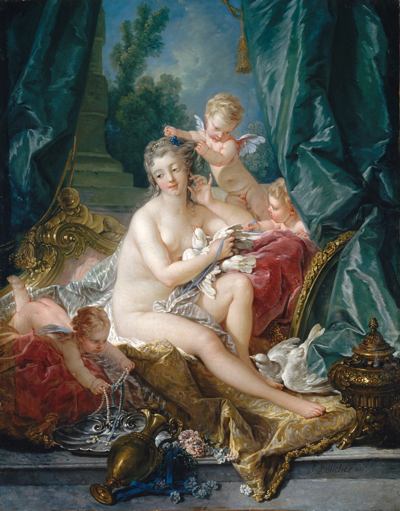
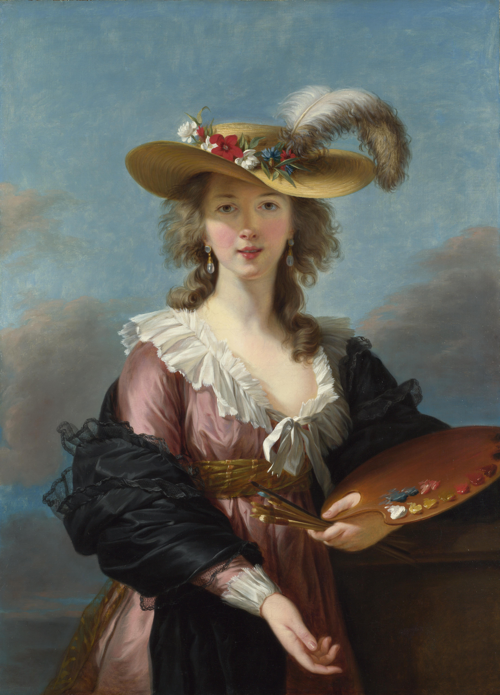
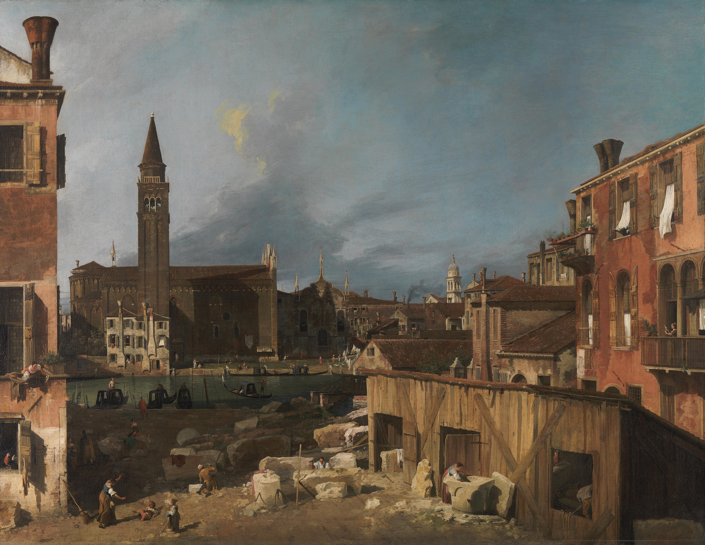
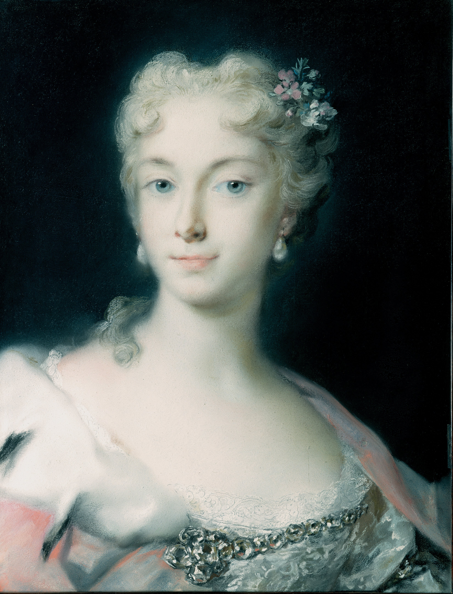

직전 질서 · 프랑스 바로크
야생트 리고, 《루이 14세의 초상》
왕의 몸보다 왕권 표장, 의례복, 기둥과 높은 자세가 먼저 읽힌다. 그림은 개인의 기분보다 제도적 위계와 지속성을 관람자에게 설득한다.
대비해 볼 것: 수직축, 의례, 권력의 거리.
18세기 프랑스에서 시작된 친밀한 미술 언어
로코코는 바로크의 움직임과 장식 능력을 이어받되, 왕권·종교의 장대한 무대 대신 살롱, 별궁, 정원, 초상 속의 사랑·대화·여가를 중심에 둔 양식이다. 비대칭 곡선, 밝은 파스텔, 가벼운 붓질은 사적인 감각과 순간의 분위기를 위한 언어가 되었다.
“권력의 장엄함”을 “특권층의 친밀한 기호”로 바꾼 미술 — 그 매력은 곧 구체제 비판의 표적도 되었다.
상세 학습
로코코는 18세기 프랑스의 귀족적 실내와 사교 문화에서 발전해 베네치아 등으로 변형된 친밀하고 감각적인 양식이다. 바로크의 움직임을 유지하면서 공적 장엄함을 비대칭 곡선, 밝은 색, 사랑과 유희의 장면으로 바꾸었다.
바로크의 종교·왕권을 위한 장대한 효과를 개인적 쾌락과 실내 장식으로 줄였고, 신고전주의는 이러한 비대칭과 감각성을 명료한 선과 공적 덕목으로 교정하려 했다.
흔한 오해: 로코코를 가볍고 예쁜 장식으로만 보면 안 된다. 사교 계층의 욕망, 성 역할, 연극성, 혁명 전 사회의 긴장도 함께 읽을 수 있다.
바로크는 교회와 군주가 신앙·왕권을 설득하도록 큰 공간, 강한 명암, 의례와 극적 행동을 조직했다. 로코코는 그 시각 기술을 버리지 않았다. 1715년 루이 14세 사후 궁정 생활의 중심이 베르사유의 대규모 의전에서 파리의 저택과 더 작은 왕실 공간으로 옮겨가면서, 관객의 거리와 감정의 규모를 바꾸었다. 새로운 주장은 ‘더 웅장한 질서’가 아니라 더 가까운 기쁨과 세련된 대화였다.
로코코의 태동은 바로크의 공식 언어에 대한 전면적 단절이 아니라, 후원 환경이 바뀌며 생긴 재배치다. 왕을 제도 그 자체로 보이게 하던 공식 초상 대신, 사교하는 귀족과 수집가에게는 분위기·대화·취향을 드러내는 장면이 더 적합했다.
왼쪽은 바로크 궁정의 위계를, 오른쪽은 그 위계에서 한발 물러난 연인들의 불확실한 움직임을 보여 준다. 두 작품 모두 화려한 직물을 쓰지만, 누가 무엇을 느껴야 하는지는 다르다.
루이 15세 시대의 궁정과 귀족 저택, 살롱, 별궁은 회화만이 아니라 가구·거울·벽면 장식·의상·연극을 함께 조율하는 공간이었다. 마담 드 퐁파두르 같은 영향력 있는 후원자와 수집가들은 신화, 목가, 초상, 판화를 통해 자신의 교양과 세련됨을 드러냈다. 베네치아에서는 궁정·교회·국제 여행자 시장이 밝은 천장화와 도시 풍경, 파스텔 초상에 다른 규모의 수요를 만들었다.
큰 제단화, 왕실 초상, 의례 공간은 신앙·왕조·국가의 영속성을 보이게 했다. 관객은 압도되고 질서 속에 위치 지어졌다.
기호는 ‘정치적 공식성’보다 친밀함, 세련된 대화, 사랑의 암시, 희귀한 물성, 개인적 취향의 과시에 가까웠다. 그러나 이 소비의 세계는 특권과 재정 부담의 맥락에서 점차 사회적 비판을 불러왔다.
프랑스의 신화화는 사적인 관능과 장식의 밀도를 높였고, 베네치아의 천장화는 같은 가벼운 색채와 곡선을 더 큰 국제 궁정 공간으로 확장했다.


구름과 열린 하늘이 건축의 경계를 지우며, 알레고리는 무거운 승리 대신 떠오르는 축제처럼 보인다. 로코코의 가벼움이 천장 전체를 감싸는 국제 장식 언어가 된다.
발전 지점: 친밀한 기호가 사라진 것이 아니라, 궁정의 넓은 공간을 밝고 유동적인 장관으로 바꾼다.
로코코는 프랑스 혁명의 직접 원인이 아니며, 모든 귀족 후원자가 같은 취향을 가졌던 것도 아니다. 그러나 구체제의 재정 위기와 불평등 속에서 궁정·귀족의 사치와 은밀한 유희는 비평가에게 공적 책임을 회피한 특권의 상징으로 보였다. 계몽주의와 고고학적 관심이 만난 신고전주의는 명료한 선, 절제, 고대의 시민적 모범을 대안적 공적 언어로 제시했다.
특권층만 해독할 수 있는 암시와 소비의 세계는 사회적 거리와 연결되어 보였다.
비평가들은 유희·관능·장식이 교육, 시민성, 현실의 고통을 비켜 간다고 보았다.
선명한 윤곽과 절제된 색, 고대사의 의무와 희생은 사적 취향에 맞서는 공적 가치의 언어가 되었다.
두 작품의 대비는 단순히 밝음과 어두움의 차이가 아니다. 무엇이 중요한 사건인지, 누가 관람자이며, 미술이 어떤 가치를 말해야 하는지에 대한 대립을 보여 준다.

분홍 드레스, 흔들리는 정원, 숨은 연인과 가벼운 붓질이 은밀한 즐거움을 만든다. 이 그림이 곧 부패의 증거는 아니지만, 후대의 비판적 관객은 특권층의 사적 쾌락을 읽어 내기 쉬웠다.
비판받은 지점: 비대칭, 비밀스러운 시선, 감각적 순간, 사적 의뢰의 세계.

직선적인 팔과 칼, 세 개의 아치, 절제된 색이 개인 감정보다 공동체의 의무를 앞세운다. 왕실 주문으로 시작했어도 곧 공적 덕목과 시민적 희생을 말하는 전형으로 읽혔다.
새로운 주장: 명료한 선, 공적 무대, 시민의 의무와 도덕적 선택.
국가가 아니라 학습 단계와 미술가 고유의 해결법으로 배열했다. 활동 국가는 이동과 후원 환경을 이해하는 참고 정보다.
| 학습 단계 | 미술가와 분야 | 주요 활동 국가 | 미술가 고유의 특징 | 대표 작품 · 연도 |
|---|---|---|---|---|
| 초심자 핵심 | 앙투안 바토 · 회화 | 프랑스 | 페트 갈랑트로 사랑의 사교와 쓸쓸한 분위기를 결합했다. | 《키테라섬으로의 순례》 · 1717 |
| 초심자 핵심 | 조반니 바티스타 티에폴로 · 회화·천장화 | 이탈리아·독일·스페인 | 베네치아 색채와 환영적 천장을 결합해 로코코를 국제 궁정 장식으로 확장했다. | 《아폴론과 대륙들》 · 1752–1753 |
| 중급 확장 | 프랑수아 부셰 · 회화·장식 | 프랑스 | 신화와 목가를 관능적이고 연극적인 궁정 환상으로 만들었다. | 《비너스의 단장》 · 1751 |
| 중급 확장 | 장오노레 프라고나르 · 회화 | 프랑스 | 빠르고 소용돌이치는 붓질로 연애와 놀이의 순간적 속도를 만들었다. | 《그네》 · 1767 |
| 중급 확장 | 엘리자베스 루이 비제 르 브룅 · 초상화 | 프랑스·유럽 궁정 | 우아한 궁정 초상에 여성 화가의 전문적 자기 이미지를 결합했다. | 《밀짚모자를 쓴 자화상》 · 1782 |
| 중급 확장 | 카날레토 · 도시 풍경 | 베네치아·영국 | 정밀한 베두타로 베네치아와 국제 여행·수집 시장의 시선을 연결했다. | 《석공의 마당》 · 1725 |
| 중급 확장 | 로살바 카리에라 · 파스텔 초상 | 이탈리아·유럽 궁정 | 파스텔의 투명한 층으로 궁정 초상을 더 친밀하고 가볍게 만들었다. | 《마리아 테레사, 합스부르크 대공녀》 · 1730 |
| 중급 확장 | 프란체스코 과르디 · 도시 풍경 | 베네치아 | 정밀한 기록보다 흔들리는 빛과 대기를 앞세운 후기 베두타를 만들었다. | 《베니스의 카나레지오 운하 풍경》 · 1770년경 |
화파·계보: 로코코에는 이 대표 작가들을 하나로 묶는 명확한 단일 화파·작업실 계보가 없다. ‘프랑스 로코코’와 ‘베네치아 로코코’는 활동 지역의 전개를 가리키므로, 이 문서에서는 이를 작가 분류나 별도 화파 표로 만들지 않는다.
대표 미술가 표와 같은 순서의 작품이다.

선정 이유: 사랑의 축제와 덧없는 분위기로 프랑스 로코코의 시작을 가장 잘 보여 준다.
연인들의 비스듬한 행렬과 부드러운 풍경은 공적 의례를 사적인 감정의 리듬으로 바꾼다.
선정 이유: 밝은 색채와 환영 천장화를 결합한 국제적 장식화의 기준점이다.
열린 하늘과 빠른 붓질이 권력의 알레고리를 축제적 장면으로 바꾼다.
선정 이유: 유희적 사랑과 빠르고 가벼운 붓질을 가장 활기차게 보여 준다.
소용돌이치는 잎과 빛이 귀족적 놀이의 순간적 속도를 만든다.

선정 이유: 후기 로코코의 우아한 초상을 여성 화가의 전문적 자기 이미지와 결합한다.
부드러운 색, 자연스러운 미소, 세련된 옷감이 궁정 초상의 친밀함을 보여 준다.

선정 이유: 도시 풍경과 국제 관광·수집 시장을 이해하게 한다.
맑은 빛과 정교한 원근법이 실제 도시를 이상적으로 조정된 개방적 장면으로 만든다.

선정 이유: 파스텔의 투명한 색채로 궁정 초상을 친밀한 이미지로 바꾼다.
분홍·청색·흰색과 벨벳 같은 피부 표현이 엄격한 권위보다 우아한 시선을 앞세운다.